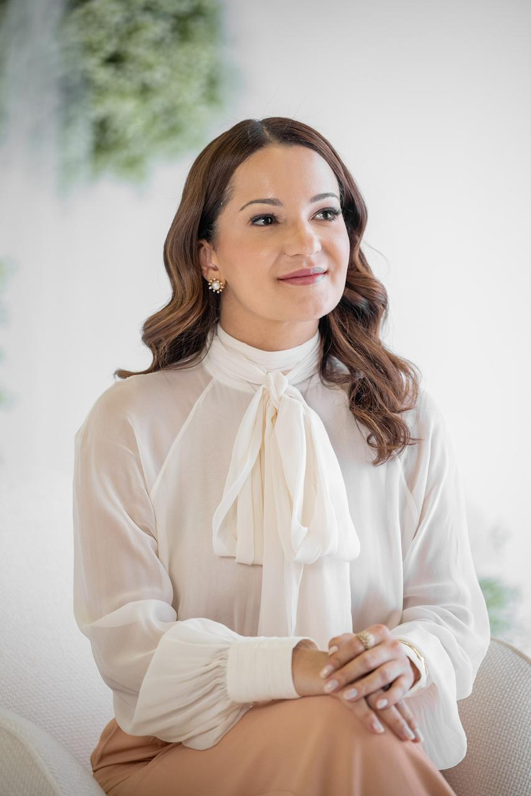

Restauração
Espiritual
Amor de Cristo
Encontre cura para as feridas da alma e redescubra sua verdadeira identidade em Cristo.
Andiara Pereira usa seu testemunho de superação para guiar mulheres e adolescentes em uma jornada de restauração espiritual e amor incondicional.

Andiara Pereira
Autora & Palestrante
A trajetória de Andiara Pereira é marcada por uma fé inabalável que transformou dores profundas em um propósito de vida. Ela conhece de perto o peso de um divórcio e o luto avassalador de oito perdas gestacionais.
Mas, foi exatamente no meio dessa dor, quando tudo parecia perdido, que ela encontrou a verdadeira cura, restauração e o amor incondicional de Jesus.
Hoje, Andiara é autora, palestrante e criadora de conteúdo cristã, dedicando sua vida a ser uma voz de esperança. Usando seu próprio testemunho, ela mostra a mulheres e adolescentes que as feridas do passado não têm poder para definir quem elas são. Você não é a sua dor. Você é quem Deus diz que você é.
Missão
Restaurando Vidas pelo Amor
Você carrega dores que parecem insuportáveis? Sentimentos de rejeição, medo ou orfandade espiritual têm paralisado a sua vida?
O livro 'Filha Amada' foi escrito pensando em você. Este livro não é apenas uma leitura, é um convite divino para uma mudança profunda na forma como você se vê e se relaciona com o Pai.
Em suas páginas, Andiara guia você por um caminho de descobertas:
Andiara Pereira
Filha
Amada
-
Restauração da Identidade
Entenda, de uma vez por todas, o que significa ser escolhida e amada por Deus.
-
Cura Emocional
Aprenda a entregar suas dores mais profundas a Quem realmente pode curá-las.
-
Mudança de Perspectiva
Comece a viver com a confiança e a liberdade que só uma verdadeira Filha Amada possui.
Descubra que você é amada.
Descubra que você pertence.
Andiara promove encontros presenciais criados para ser um refúgio de acolhimento e um ponto de virada na reconstrução da identidade feminina. São momentos poderosos de comunhão, reflexão e cura.
1º Encontro de Adolescentes Filha Amada
Focado nas descobertas e inseguranças da adolescência. Uma tarde para ensinar às meninas que sua verdadeira identidade não está nas redes sociais ou na opinião dos outros, mas no amor inabalável de Deus. Um momento para curar feridas do coração antes que elas se tornem cicatrizes profundas.
2º Encontro de Mulheres Filha Amada
Uma experiência voltada para mulheres que carregam dores silenciosas. Sob o tema "Identidade, Valor e Pertencimento", este encontro presencial é um espaço de acolhimento e cura, criado para que você se reconecte com sua essência e lembre-se: você é chamada para viver como uma filha amada, restaurada e livre em Cristo.

Participe de uma experiência transformadora. Veja onde Andiara estará em breve.
Janeiro 2026
No momento não temos eventos com inscrições abertas nesse mês. Cadastre-se na nossa lista VIP para ser a primeira a saber de novas datas e locais!
Título do Evento
Sobre este evento
Informação detalhada da conferência. Aqui entra o texto sobre o que vai ser abordado, qual o horário exato e o que ela precisa levar. Uma tarde inteira para ser transformada.